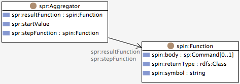

SPIN Result Sets, Tables and Spreadsheets Vocabulary
February 12, 2010. Updated June 18, 2013.
- Authors:
- Holger Knublauch <holger@topquadrant.com>

This document describes the SPR vocabulary: a collection of classes, properties and SPARQL functions that can be used to process tabular data in RDF. The tabular data may originate from the result sets of SPARQL SELECT queries, from external spreadsheet files or from user input. SPR does not prescribe details on the storage of the tabular data, e.g. as RDF triples, but instead only defines an abstract interface of SPARQL functions that can be used to query, iterate through and aggregate tabular data.
1.0.0
This document is an optional part of the SPARQL Inferencing Notation (SPIN) specification.
Having RDF-based projects operate on tabular data is a very common scenario. Such data may originate from spreadsheets, from which it needs to be converted into a given ontology. Or the data may be the result of a separate processing step, such as a SPARQL SELECT query returning a result set of variable bindings. The user may want to process data from such result sets in different ways than possible to express with SPARQL alone, for example to run new kind of aggregators that are not part of the standard vocabulary (string lists etc).
There is no standard way of storing tabular data in RDF. Even for simpler structures such as lists, RDF is rather weak. There are many different alternatives for doing so, such as converting the rows into separate objects (resources) that have the column values as properties.
The SPIN Result Sets, Tables and Spreadsheets (SPR) Vocabulary is a collection
of SPIN functions that can be used to query tabular data from SPARQL queries.
The SPR namespace can be found at
<http://spinrdf.org/spr>
and is commonly abbreviated with the prefix spr.
Those functions are independent from any particular table storage format
or mapping to triples.
Instead the SPIN functions are generic and use reflection at execution time
to derive the mappings from the table instances.
The separate namespace
<http://spinrdf.org/spra>
(commonly abbreviated with the prefix spra) is an example
implementation of the SPR interfaces, based on a very efficient URI-based
triple mapping.
This document enumerates the main functions of the SPR vocabulary.
More details can be found in the spr namespace itself.
The SPR functions assume that a table is identified by a given RDF resource. This resource might be a blank node linking off to rows etc, or it could be a URI node that helps identify the cell values. It might even be a completely virtual resource that does not have any triples attached to it, but only serves as identifier to look up data from elsewhere (e.g. web services or databases).
In the following example, the SPR function spr:colCount is used
to get the number of columns in a given table.
SELECT ?colCount
WHERE {
?this ex:tableData ?table .
LET (?colCount := spr:colCount(?table)) .
}
A table (such as the resource matching the variable ?table in the example
above) must have a rdf:type triple though, and this
type must be a class that has the metaclass spr:TableClass.
Table classes must specify the URIs of various low-level functions
and these low-level functions are executed by the generic SPR functions.
The following example (in Turtle notation) defines a table type spra:Table
that uses the specified low-level functions:
spra:Table
a spr:TableClass ;
rdfs:label "Table"^^xsd:string ;
rdfs:subClassOf spr:Table ;
spr:cellFunction spra:cellFunction ;
spr:colCountFunction spra:colCountFunction ;
spr:colNameFunction spra:colNameFunction ;
spr:rowCountFunction spra:rowCountFunction .
The example class spra:Table is a subclass of spr:Table.
The latter can be used as range of properties etc.
When SPR functions operate on a given Table, then they can look up the
"implementation" functions using the system properties such as
spr:colCountFunction.
These low-level functions then know the details of the selected storage
format, and may either be declarative SPIN functions, or native built-ins.
The following sections enumerate the core functions of the SPR vocabulary.
The sprfile itself contains additional functions, but those are
only relevant as private helpers and should not be used externally.
Gets the number of columns of a given table.
The number of columns (at least 1).
Gets the number of rows of a given table.
The number of rows (at least 0).
Gets the value in a given table cell.
An RDF literal or resource that is the value of the given cell, or null if the cell is empty.
Gets the name of a given table column.
The column name.
A common task on tables is to aggregate the values of a given row or column, for example to compute the average or sum, or to concatenate multiple values into a single string. Such aggregations begin with a start value (such as 0), then call an aggregator step function (such as the built-in mathematical + operator) and finally may call a result function that takes the aggregated result of the step functions to compute the final result (such as dividing the sum of values by the number of steps in the case of average).
The SPR vocabulary defines a class spr:Aggregator that is illustrated
in the class diagram below.

Each spr:Aggregator defines the following properties:
(?arg1 + ?arg2)).
(?arg1 / ?arg2)).
The SPR vocabulary includes a collection of predefined spr:Aggregators:
For example, spr:Avg is defined as follows.
spr:Avg
a spr:Aggregator ;
rdfs:label "Avg"^^xsd:string ;
spr:resultFunction sp:divide ;
spr:startValue "0"^^xsd:double ;
spr:stepFunction sp:add .
In the example above, sp:divide is the built-in SPARQL operator
/ and sp:add is the +.
Arbitrary other functions can be used as well, such as fn:concat.
Other aggregators can be defined and passed as argument into the following
SPIN functions.
Iterates over all cells of a given column and applies a given
spr:Aggregator on each of them.
The aggregated result.
Iterates over all cells of a given row and applies a given
spr:Aggregator on each of them.
The aggregated result.
SPR defines a collection of magic SPARQL properties (aka property functions) that can be used to traverse a given table. A typical use case is illustrated in the following example:
CONSTRUCT {
?company ex:employee _:person .
_:person a ex:Person .
_:person ex:firstName ?firstName .
_:person ex:lastName ?lastName .
}
WHERE {
?company ex:mappedToTable ?table .
?table spr:rowIndices ?rowIndex .
LET (?firstName := spr:cell(?table, ?rowIndex, 0)) .
LET (?lastName := spr:cell(?table, ?rowIndex, 1)) .
}
Iterates over all columns of a given table and binds the variable on the right with the indices, starting with 0.
Iterates over all rows of a given table and binds the variable on the right with the indices, starting with 0.
Iterates over all rows of a given column at a given table.
Iterates over all columns of a given row at a given table.
SPIN Result Sets may contain additional information about columns that can
be used to inform a rendering agent on how to display tables.
This data may be derived from spin:Columns attached to
SPIN templates, or other mechanisms.
If present, then the following functions can be used to retrieve the column metadata.
Gets the width of a given table column.
The column width in pixels (xsd:integer), or unbound.
Gets the (data)type of a given table column.
For example, if the type of a column is xsd:float then
a display engine may want to right-align its cells.
The type as a URI resource, or unbound.
The SPRA namespace is a (default) implementation of the SPR vocabulary that stores the cell values as illustrated in the following example.
<http://example.org/table123>
a spra:Table ;
spra:colCount 2 ;
spra:rowCount 2 ;
spra:colName0 "firstName"^^xsd:string ;
spra:colName1 "lastName"^^xsd:string .
<http://example.org/table123-r0-c0> spra:value "Steve"^^xsd:string .
<http://example.org/table123-r0-c1> spra:value "Roach"^^xsd:string .
<http://example.org/table123-r1-c0> spra:value "Klaus"^^xsd:string .
<http://example.org/table123-r1-c1> spra:value "Schulze"^^xsd:string .
The low-level functions attached to the class spra:Table
have URI naming conventions built-in so that the values of each cell
can be accessed quickly with the help of string concatenations.
Note that your application should not rely on the above low-level details but instead always access SPRA tables through the generic SPR functions.
The URL of the SPR schema is http://spinrdf.org/spr
The URL of the SPRA schema is http://spinrdf.org/spra